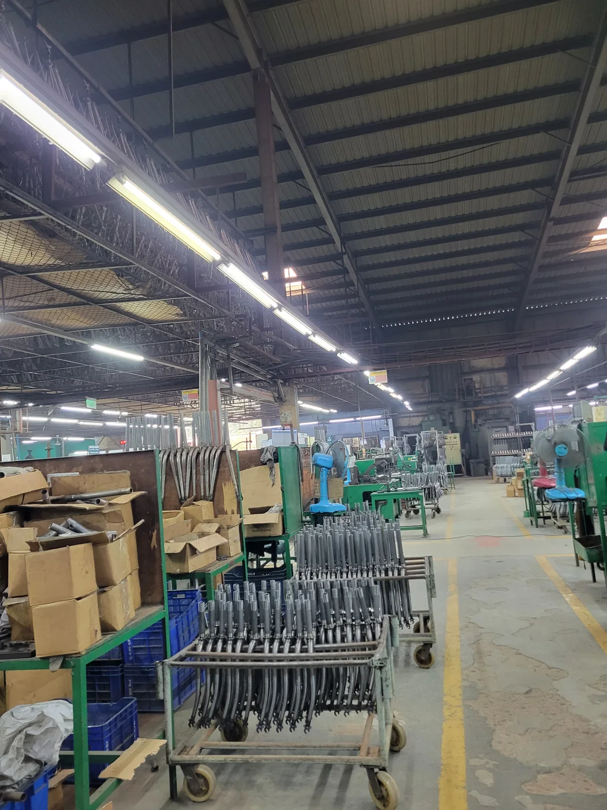
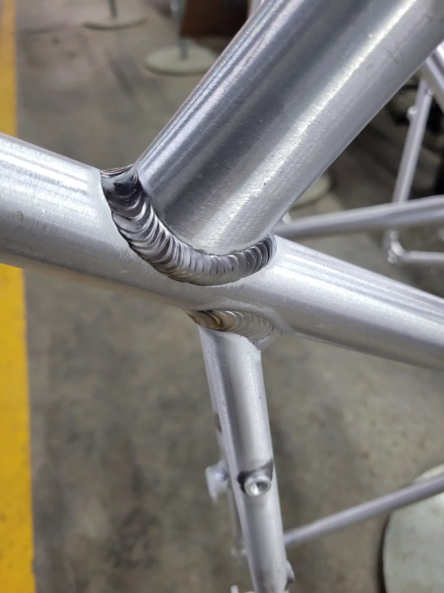
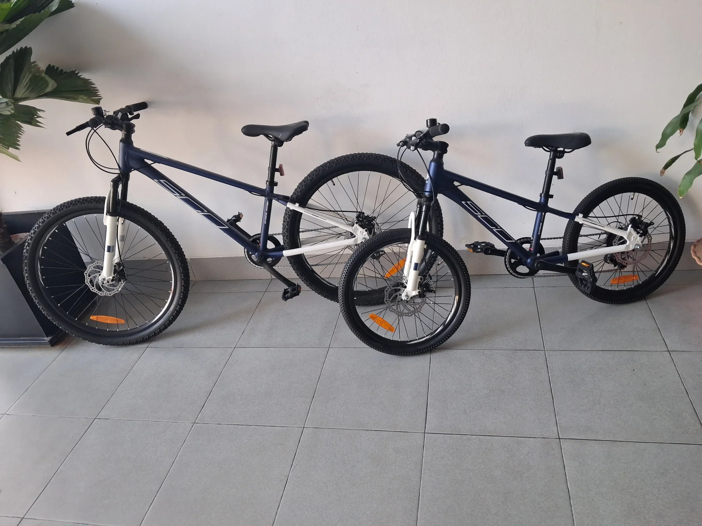
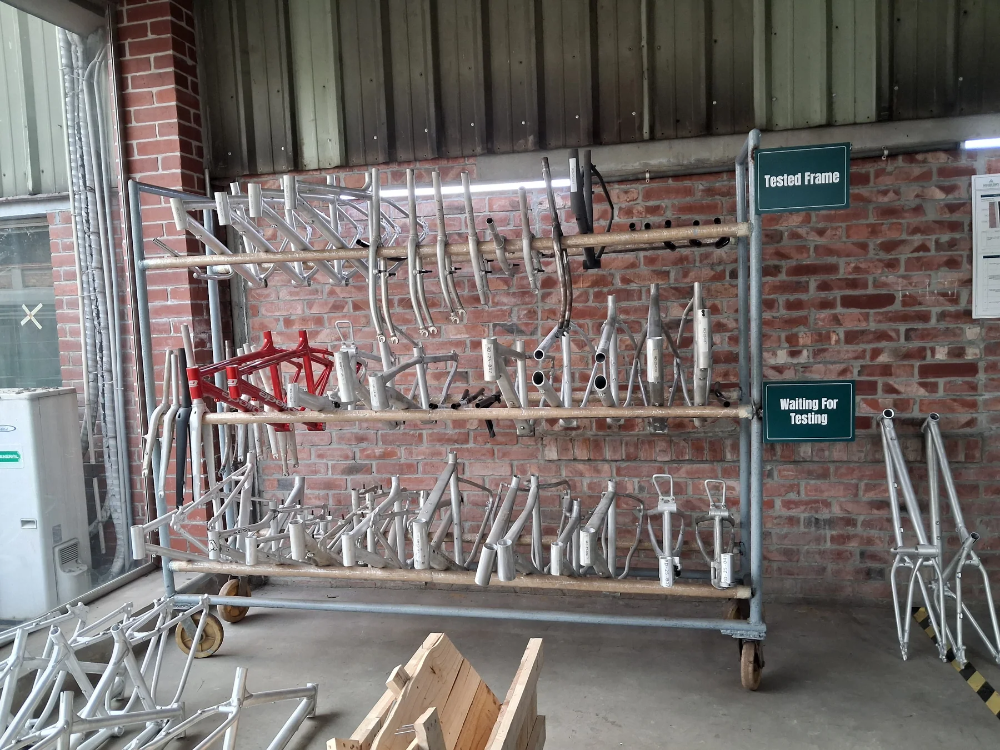
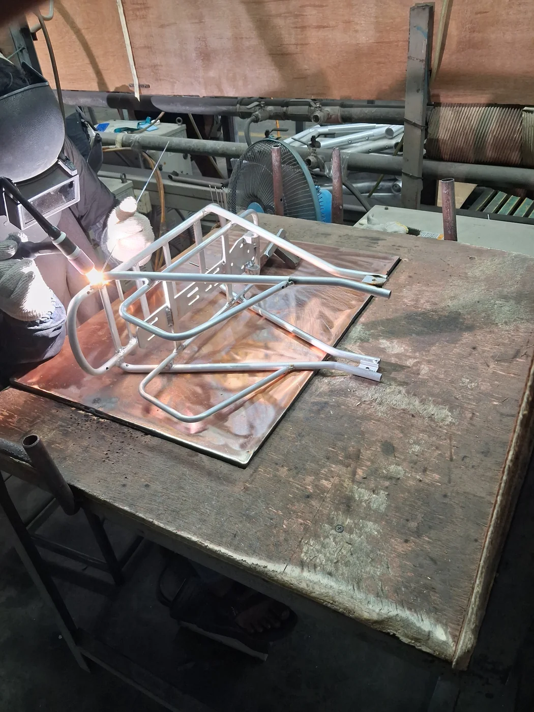
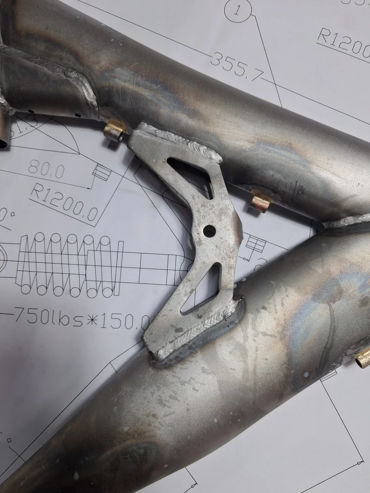

Graduate Research Assistant
Researching nanostructure and ion dynamics of functional membranes for rare-earth separation using molecular simulation and machine learning.
Research and professional engineering experience across computation, materials, and manufacturing.
Researching nanostructure and ion dynamics of functional membranes for rare-earth separation using molecular simulation and machine learning.
Worked with the R&D team to initiate finite element simulation of bicycle frames, supporting design evaluation before physical testing and production.
Worked on machine learning for aluminum-alloy thermal conductivity and multi-fidelity modeling of Ti-6Al-4V.
A curated selection from my work experience in bicycle research, development, manufacturing, and engineering operations.






Captions can be replaced with the exact activity, machine, or project name when you update the site.